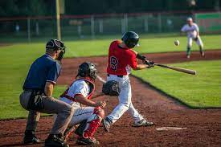

El beisball
El objetivo del juego es golpear una pelota con un bate (batear), desplazándola a través del campo y correr por el campo interno de tierra (infield) buscando alcanzar la mayor cantidad de bases posibles hasta dar la vuelta a la base desde donde se bateó (home) y lograr anotar el tanto conocido como carrera, mientras los jugadores defensivos buscan la pelota bateada para eliminar al jugador que bateó la pelota o a otros corredores, antes que éstos lleguen primero a alguna de las bases o consigan anotar la carrera
historia y origen
La historia del béisbol se ha desarrollado principalmente en los Estados Unidos, aunque se ha extendido en países y regiones como Australia, Panamá, República Dominicana, Europa, Asia, etc. Si bien el origen exacto del juego es difícil de encontrar, la mayoría que han hecho estudios de su historia coinciden que el béisbol evolucionó desde una variedad de juegos de características similares a este.
reglas
El equipo local siempre comienza jugando a la defensiva, mientras que el visitante inicia bateando.
El campo de juego tiene dos líneas que delimitan el terreno y que, dependiendo de dónde caiga un batazo, se considerará la pelota en juego o fuera de juego.
Explore